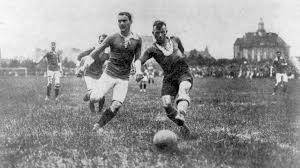
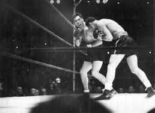
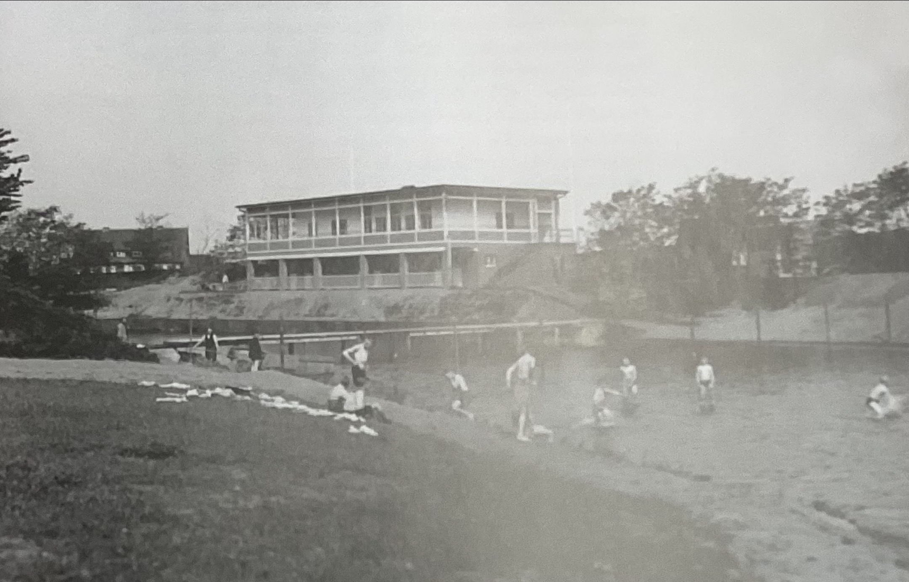
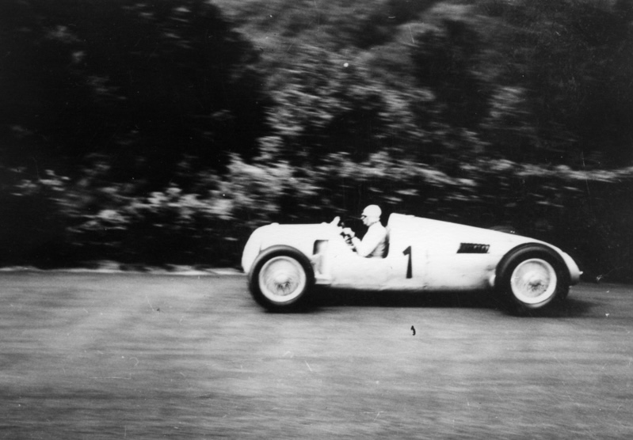

Fußball
Fußball war die beliebteste Sportart in den Goldenen Zwanziger.
Geschichte · Sport · Gesellschaft
Diese Website ist als ruhiger, seriöser Überblick aufgebaut und kann später mit eigenen Texten, Bildern und Quellen weiter ausgearbeitet werden.
Männer
Männersportarten wurden damals sehr beliebt.

Fußball war die beliebteste Sportart in den Goldenen Zwanziger.
Fußball war äußerst populär bei Männern und Jugendlichen, da viel Begeisterung dafür vorhanden war. Fußball war der beliebteste Sport in den Goldenen Zwanzigern. Der FC Nürnberg war in dieser Zeit ein sehr kompetenter Verein. Nürnberg galt als die Fußballhauptstadt Deutschlands. Damals gab es keine Bundesliga, sondern Meisterschaften in den Regionen. Spiele wurden oft über das Radio verfolgt.
Vereine bekamen mehr Zuschauer, große Stadien entstanden und Spiele wurden zu wichtigen gesellschaftlichen Ereignissen.
Zeitungen berichteten regelmäßig über bekannte Mannschaften und Spieler. Der Sport entwickelte sich langsam zu einem modernen Massensport.

Wie Fußball war Boxen auch sehr beliebt und wichtig, besonders für die Männer.
Boxen hatte in den Goldenen Zwanzigern ein sehr großes Publikum, besonders in Großstädten wie Berlin oder Hannover. Boxkämpfe zogen oft große Menschenmengen an und wurden regelmäßig in Zeitungen diskutiert. Viele bekannte Boxer wurden zu internationalen Stars und genossen große Popularität.
Bekannte Boxer waren zum Beispiel Mickey Walker, Gen Tunney und Jack Dempsey.
Besonders große Titelkämpfe galten als spektakuläre Veranstaltungen. Sie boten nicht nur spannende Kämpfe, sondern auch Musik, Werbung und eine begeisterte Atmosphäre mit vielen Zuschauern.

Viel Leichtatletik wurde in den Olimpischen Spielen aus 1920, 1924 und 1928 praktiziert.
Lauf-, Sprung- und Wurfwettbewerbe wurden immer professioneller organisiert. Internationale Wettkämpfe steigerten das Interesse an der Leichtathletik.
Obwohl Deutschland in den Jahren 1920 und 1924 nicht mitmachen durften, haben die 1928 gut mitgemacht, trotzdem waren die nicht besonders erfolgreich. Länder wie die USA und Frankreich haben die meisten Medaillen gewonnen.
Schulen und Sportvereine nutzten den Sport außerdem zur Förderung von Gesundheit und Disziplin.

Waghalsige Entscheidungen von Rennfahrern zogen viele Menschen zu diesen Sportarten.
Die Rennen waren besonders beliebt, weil vielen Riskanten Entscheidungen getroffen wurden. Damals wurden die Autos schon 60 Meilen (97 km) schnell.
Automarken wie Bugatti, Bentley und Alfa Romeo waren schon dabei, und führten ganz vorne.
Große Rennen wurden von zahlreichen Zuschauern verfolgt und oft ausführlich dokumentiert.
Frauen
Frauensportarten begannen an Bedeutung zu gewinnen..
Fußball war die beliebteste Sportart in den Goldenen Zwanziger.
Fußball war äußerst populär bei Männern und Jugendlichen, da viel Begeisterung dafür vorhanden war. Fußball war der beliebteste Sport in den Goldenen Zwanzigern. Der FC Nürnberg war in dieser Zeit ein sehr kompetenter Verein. Nürnberg galt als die Fußballhauptstadt Deutschlands. Damals gab es keine Bundesliga, sondern Meisterschaften in den Regionen. Spiele wurden oft über das Radio verfolgt.
Vereine bekamen mehr Zuschauer, große Stadien entstanden und Spiele wurden zu wichtigen gesellschaftlichen Ereignissen.
Zeitungen berichteten regelmäßig über bekannte Mannschaften und Spieler. Der Sport entwickelte sich langsam zu einem modernen Massensport.
Platz für Informationen über Boxen als Zuschauersport und gesellschaftliches Ereignis.
Boxen hatte in den Goldenen Zwanzigern ein sehr großes Publikum, besonders in Großstädten wie Berlin oder Hannover. Boxkämpfe zogen oft große Menschenmengen an und wurden regelmäßig in Zeitungen diskutiert. Viele bekannte Boxer wurden zu internationalen Stars und genossen große Popularität.
Besonders große Titelkämpfe galten als spektakuläre Veranstaltungen. Sie boten nicht nur spannende Kämpfe, sondern auch Musik, Werbung und eine begeisterte Atmosphäre mit vielen Zuschauern.
Platz für Informationen über Wettkämpfe, Vereine und internationale Bedeutung.
Lauf-, Sprung- und Wurfwettbewerbe wurden immer professioneller organisiert. Internationale Wettkämpfe steigerten das Interesse an der Leichtathletik.
Schulen und Sportvereine nutzten den Sport außerdem zur Förderung von Gesundheit und Disziplin.
Platz für Informationen über Radsport als populäre und zugängliche Sportart.
Der Radsport war besonders beliebt, weil Fahrräder vielen Menschen den Zugang zu Sport und Mobilität ermöglichten.
Große Rennen wurden von zahlreichen Zuschauern verfolgt und oft ausführlich dokumentiert.
Kontext
Hobbys und Freizeitbeschäftigungen wurden zum ersten mal ernst genommen und gemacht.
Es entstanden Meisterwerke...
Kinos wurden in den 1920er Jahren immer populärer und galten als moderne Form der Unterhaltung.
Wie vorher aber anerkannter, auch oft bei Männer.
Tanzveranstaltungen waren wichtige soziale Treffpunkte und besonders in Städten sehr beliebt.
Die Bücherindustrie wurde größer, es gab mehr Bücher.
Bücher, Zeitungen und Magazine wurden von vielen Menschen regelmäßig gelesen.
Jazz hatte großen Einfluss...
Jazz und moderne Musikrichtungen verbreiteten sich schnell und beeinflussten die Kultur.
Es entstanden viele Vereine, wie zum Beispiel fürs Bogenschießen.
Viele Menschen engagierten sich in Vereinen und organisierten gemeinsame Aktivitäten.
Spaziergänge wurden als gesund und interresant gesehen.
Spaziergänge galten als entspannende Freizeitaktivität und wurden oft in Parks gemacht.
Überblick
Eine vertikale Zeitleiste für wichtige Stationen.
Platzhaltertext für den historischen Einstieg.
Platzhaltertext für den Sport nach dem Krieg.
Platzhaltertext für internationale Aufmerksamkeit.
Platzhaltertext für die Entwicklung bis zum Ende der 1920er Jahre.
Weiter